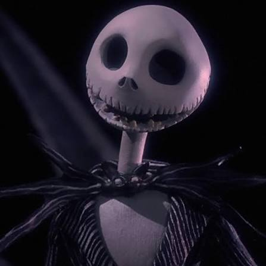
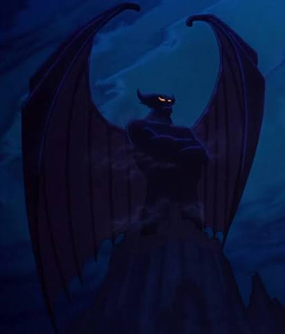
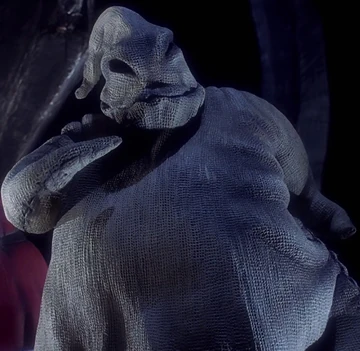
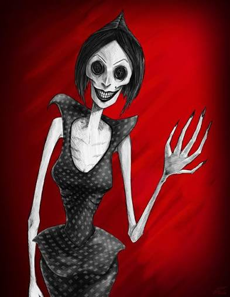
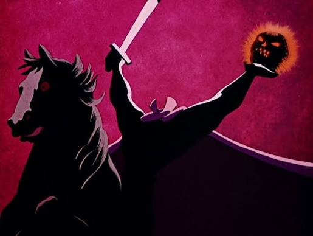
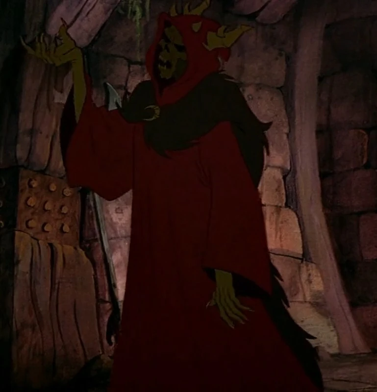
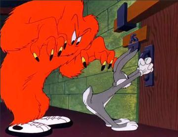
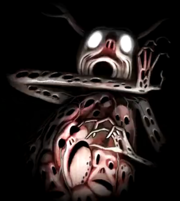
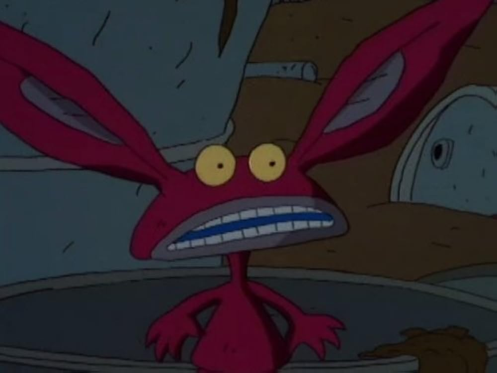

Introduction: The Pumpkin King of Halloween Town, a tall, lanky skeleton with a high-class pinstripe suit and a tragic artistic streak.

Introduction: A gigantic, winged demon god who wakes up on Walpurgis Night to summon ghosts, fire demons, and harpies from the top of Bald Mountain (Night on Bald Mountain).

Introduction: A gambling obsessed, jazz singing baddie who looks like an ordinary burlap sack except he is stuffed to the brim with live bugs and snakes.

Introduction: A terrifying shapeshifting demon who lures children into an alternate world, replacing their eyes with shiny black buttons.

Introduction: A fiery-eyed, sword-wielding specter riding a black steed who hurls a glowing jack-o'-lantern at poor Ichabod Crane.

Introduction: A rotting, skeletal warlord with glowing red eyes and ram-like horns, bent on raising an undead army.

Introduction: A giant, hairy, pear-shaped orange beast with massive tennis shoes, glowing eyes, and hidden claws.

Introduction: A towering, shadowy silhouette with branches for antlers, whispering from the dark woods and harvesting lost souls into oil lanterns.

Introduction: A small, twitchy, bruise-colored student monster from Nickelodeon's underground academy with giant ears and a habit of munching garbage.